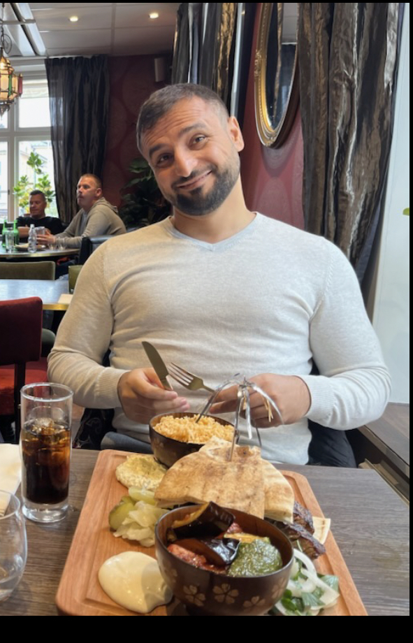

Jag heter Olle. Jag är 31 år och har precis flyttat till Linköping.
Mitt framtida mål är att arbeta som backend dev.
Om mig
Hej! Jag heter Delzar, är 40 år och pappa till fyra barn – samt två bonusbarn via min särbo. Jag arbetar på ett LSS-boende och trivs väldigt bra. Trots att jag älskar mitt jobb finns det begränsade utvecklingsmöjligheter. Nu när barnen är större har jag mer tid och satsar därför på något jag alltid velat – att kunna koda. Min dröm är att en dag bygga ett eget mer avancerat spel. Jag har redan gjort några enklare spel och prototyper.
Just nu jobbar jag kvar på LSS-boendet och har dessutom fått ett nytt jobb/uppdrag på ett studieförbund. Där bygger jag olika kurser som jag sedan undervisar i och jag hjälper även till administrativt för olika verksamheter och föreningar.
Jag har pluggat till systemutvecklare. Min nuvarande dröm är att bli folkhögskollärare inom IT men jag kom inte in senast då jag saknade tillräcklig erfarenhet och poäng. Därför läser jag den här kursen nu för att förbättra mina chanser, utvecklas och lära mig mer om IT-branschen.
På fritiden går mycket tid till familjen. Jag tränar, kodar saker jag tycker är roliga och spelar ibland främst World of Warcraft och ARK även om jag inte hinner så mycket som jag skulle vilja.
Mitt mål i gruppen är att bidra med en positiv inställning, hjälpa teamet på bästa sätt och samtidigt lära mig av mina gruppmedlemmar både nya sätt att se på saker och smartare arbetssätt.